Visual Basic 6.0中的c2.dll除法优化相关逆向分析与数学模型
逆向分析过程
使用ccf Explorer中的Address Converter计算文件偏移地址为5FACE的虚拟地址为1075EACE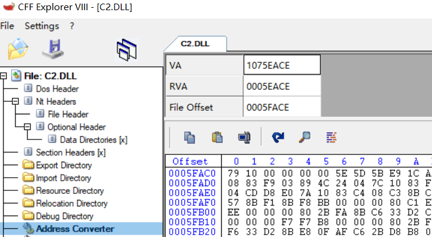
使用ida打开c2.dll，跳转到1075EACE地址处，分析1075EACE到1075EB9C的代码，也就是sub_1075EACE(a)函数（自命名为calmagic(a))
- 判断输入参数a是否小于3，小于则跳转到loc_1075EAEA,否则继续将其与0Dh(13)进行比较，不小于13则跳转到loc_1075EAEA,否则返回dword_107AE0D8[2a]（自定义为数组num[2*a])，即直接查表返回magicnumber
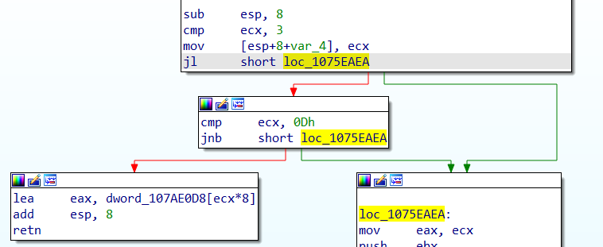
查看数组的值如下所示
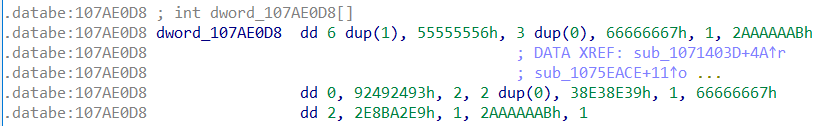
- loc_1075EAEA:使用cdq指令将eax（mov eax,ecx将参数a存入eax中)的最高位全部复制到edx的每一位。可以看出该部分主要为各寄存器值的计算，各寄存器分别计算如下：
-
edi:首先将eax中的值存入edi中，然后与其符号位扩展得来的edx异或，再减去edx，求得参数的绝对值。
-
esi:首先将ecx中的值存入esi中，然后shr右移31位，sub减去80000000h，接着sub减去edx中的值（为eax:edx的值div edi后得到的余数），最后再通过dec减一
-
将31放入var_8中
-
ebp:由mov ebp,eax将eax的值存入其中，即80000000/esi的值
-
ebx:由sub ebx,eax可以看出最后值为ebx-eax的值，刚开始ebx为80000000，eax此时为esi*(80000000/esi)
-
ecx:由moc ecx,eax可以看出最后值为eax值，即80000000/edi后的值
-
edx:由sub edx,eax可以看出最后值为edx（80000000）-eax（edi*(80000000/edi))
该部分运算代码如下：
1
2
3
4
5
6
7
8edi = a > 0?a:-a;
var_8 = 31;
esi = ((unsigned int)a >> 31) + 0x80000000 - (((unsigned int)a >> 31) + 0x80000000) % edi - 1;
ebp = 0x80000000 / esi;
ebx = 0x80000000 - esi * (0x80000000 / esi);
ecx = 0x80000000 / edi;
edx = 0x80000000 - edi * (0x80000000 / edi);
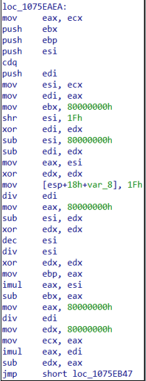
-
loc_1075EB47:可以发现主要为一个do_while循环。依次进行运算：var_8++；ebx=ebx+ebx；ebp=ebp+ebp,之后比较ebx与esi的值，ebx不小于esi时则跳转到loc_1078F407,否则跳转到loc_1075EB5C
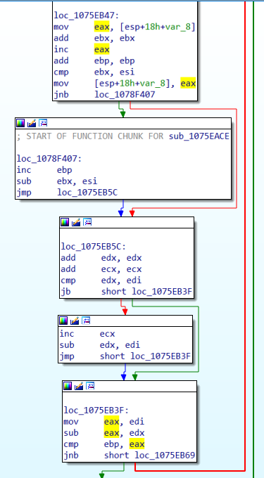
-
loc_1078F407:将ebp++,ebx=ebx-esi;
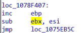
-
loc_1075EB5C:运算edx=edx+edx;ecx=ecx+ecx;接着比较edx与edi的值，小于则跳转到loc_1075EB3F,否则将ecx++,edx=edx-edi
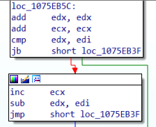
-
loc_1075EB3F:判断ebp与edi-edx的值，不小于则继续用test指令将ebx与ebx进行与运算并设置标志位ZF.标志位ZF为1（运算结果为0）则跳转到步骤步骤3继续执行，否则进入下一步
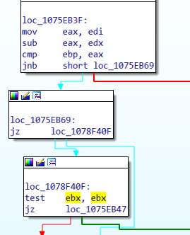
该段循环运算代码如下：
1
2
3
4
5
6
7
8
9
10
11
12
13
14
15
16do {
ebx = ebx + ebx;
ebp = ebp + ebp;
var_8 ++;
if(ebx >= esi) {
ebp++;
ebx -= esi;
}
edx = edx + edx;
ecx = ecx + ecx;
if(edx >= edi) {
ecx++;
edx -= edi;
}
}while(ebp < edi - edx || ebp == edi - edx && !ebx); -
loc_1075EB6F:令dword_1079F090为eax(之前用lea指令将ecx+1作为地址存入eax中），然后判断输入参数a是否小于0，小于则跳转到loc_1078F41C,否则跳转到loc_1075EB87
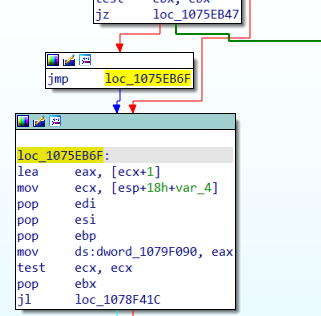
-
loc_1078F41C:eax中的值取负数存入dword_1079F090中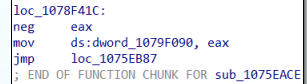
-
loc_1075EB87:令eax为dword_1079F090的地址，dword_1079F094为var_8+0FFFFFFE0h（即-32）
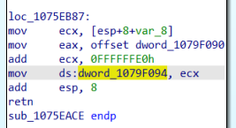
该算法整体代码如下：
1 |
|
进行测试如下所示
除数为7
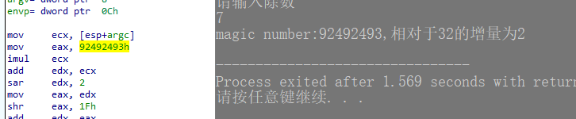
除数为27
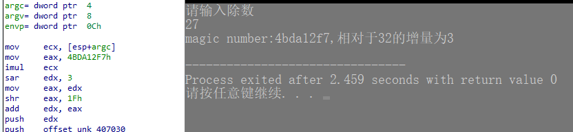
除数为-7
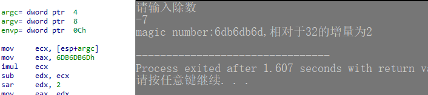
成功还原
数学模型分析
计算x/o，o为常数，若直接使用div，耗费的机器周期较长，因此编译器会进行优化来缩短指令周期。主要利用的数学推导如下：
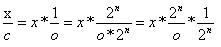
由于2^n/o可以提前计算出来，因此可以将除法转化乘法以及移位指令进行计算，即优化为
1 | imul ecx; //ecx存储被除数x |
因此，算法期望根据输入的除数o，找到满足下述公式的n和m
结合逆向出的算法进行分析
-
首先判断除数o是否属于[3,13)，属于则直接从已建好的表中得到n与m，否则继续下列步骤计算得到n与m
-
edi中存储除数的绝对值，var_8存储指数n（由于下面do_while循环至少一次循环，因此首先赋值为31），假设
(((unsigned int)a >> 31) + 0x80000000) / edi得到商为q，余数为r,其中0x80000000为2^31，那么esi=q*edi-1,ebp=(2^31)/esi,ebx=2^31-esi*(2^31/esi)；假设2^31除以esi得到商为k，余数为y，那么ebp=k,ebx=y,ecx = (2^31)/edi = k;edx = 2^31 - edi*(2^31/edi) = y -
循环计算：每次循环ebx,ebp乘以2，假设循环次数为i，因此
ebx=y*2^i,ebp=k\*2^i，每次循环var_8加1，最后var_8相当于我们需要找的n。若ebx >= esi，那么ebp加1，ebx=ebx-esi，这里用到数学归纳法求得2^（31+i）除以esi的商以及余数，证明如下因此，主要是使用if判断2 * Mi是否大于esi，大于则说明商要加1，余数要减掉除数，因为Mi < esi，所以2 * Mi < 2 * esi，最多只可能多出一个esi。之后的同理为计算
2^(31+i)/edi的商和余数，而edi又是除数a的绝对值，所以循环结束后ecx = 2^(31+i)/edi就是得到的magic number除数o大于0时，
除数o小于0时，